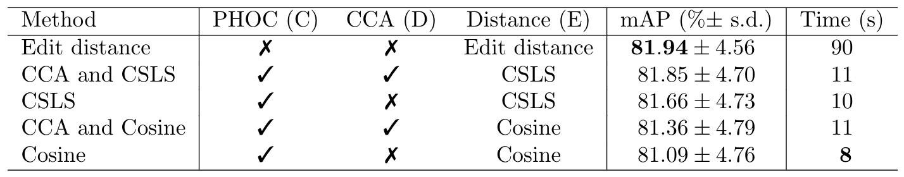
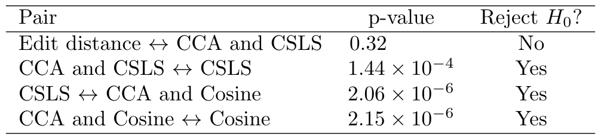
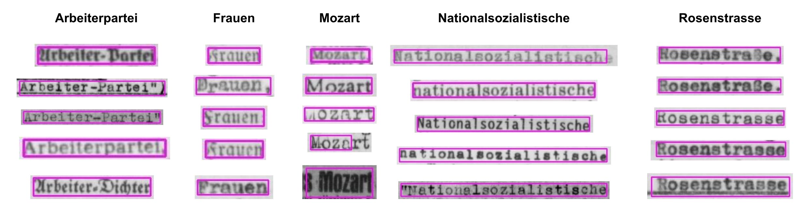

Introduction
Indexing and searching historical documents has garnered attention in recent years due to massive digitization efforts of important collections worldwide. Pure textual search in these corpora is problematic since optical character recognition (OCR) is infamous for performing poorly on such historical material. We propose a novel text-based method for searching through noisy text.
We implemented the proposed method for the Wiener Library, one of the most extensive archives on the Holocaust and Nazi era. Established in 1933, the library's unique collection includes press cuttings, eyewitness testimonies, photographs, as well as published and unpublished works from that era. It includes approximately 150,000 books, reference works, pamphlets and journals and over one million indexed newspaper clippings, unpublished memoirs, and interviews. These documents have been digitized and made available online. Hence, it's of great importance to have a fast search tool for them.
We present an easy-to-implement method that enables scholars and the public to effectively search such large collections of textual material that would otherwise be inaccessible due to the lack of reliable transcriptions. Its advantage is its simplicity, in contrast to existing image-based methods (such as various word-spotting methods [1, 2, 3, 4], which are technically involved and need to be rebuilt/retrained for each script style within a dataset. It is based on existing OCR tools that work well for a variety of typefaces and languages. The ease and low cost of implementation enables anyone to apply it to various datasets without substantial expertise in computer vision.
Method
Given a text query, we would like to find the correct matches among the noisy candidates output by the OCR.
Our method consists of (A) preprocessing the images, (B) obtaining noisy candidate words using an OCR engine, (C) encoding the query and candidate words into vectors, (D) learning a common subspace between them, and finally (E) ranking the candidates according to distance from the query.
For preprocessing (step A), we remove black borders surrounding documents in the images and adjust contrast using the CLAHE algorithm [5] because many documents have non-uniform lighting.
Encouraged by recent improvements in OCR software, we chose the Tesseract engine [6, 7] (B) to obtain candidates. Tesseract is open-source and works well for a variety of typefaces and languages.
Next, we encode the candidates and queries in fixed-size vectors (C) using the recent pyramidal histogram of characters (PHOC) representation [1]. Words with similar spellings are close together in the PHOC vector space.
We then use canonical-correlation analysis (CCA) to learn a common subspace between noisy OCR readings and ground truth (D). This step performs "soft-correction" by projecting OCR misreadings closer to their ground truth texts in the learned subspace.
Lastly, we find the correct candidates using a nearest-neighbor search (E). The most commonly used distance metric for this is cosine distance. However, nearest-neighbor search is by its very nature asymmetric. This causes faulty matching in high-dimensional spaces [8]. We use the recently proposed cross-domain similarity local scaling (CSLS) [9] to mitigate this issue.
Experiments and Results
We tested the accuracy and speed of our system in an information-retrieval setting on a subset of the Wiener Library's "500 Document Collection," which makes up the main component of the original materials and comprises over 75,000 images that have been scanned from microfilm and microfiche copies of the originals. We annotated 18 pages, totalling 4284 words. Furthermore, we created 20 random splits, each split containing 9 pages for learning the common subspace using CCA, and 9 pages for testing.
We used a set of 96 Latin characters for the PHOC representations, thus resulting in a 1440 size binary vector for each word.
Table 1: Search results, with and without PHOC encoding or CCA projection and using different metrics. Last column gives average time on a CPU to search through the labeled test set.
Table 2: Statistical significance test results.
We tested different versions of our system against edit distance. Table 1 shows the performance in the information-retrieval setting. The results of the paired t-tests can be seen in Table 2. Finally, the last column of Table 1 shows the timing comparisons between the methods. The best version of our system (CCA and CSLS) is 9 times faster than edit distance, and achieves almost the same mean average precision (mAP).
The difference in performance between edit distance and our method is statistically insignificant, although edit distance performs slightly better on average. The differences between all other methods are statistically significant. This means that the two additions of (1) learning a common subspace to perform soft correction (step D) and (2) using the CSLS metric (step E) were effective in improving the overall performance of our method.
Figure 1: Qualitative search results for the entire dataset. Bounding boxes in pink. Our model works wellwith faded ink and approximate matching.
Figure 1 shows qualitative search results through the entire dataset. The system finds very long words ("Nationalsozialistische"), as well as approximate matches to a query that has slightly different readings ("Rossenstrasse" vs. "Rossenstraße"). As can be seen, OCR performs well on a variety of fonts.
Conclusion
We presented a fast and accurate text-based search that is easy to implement and which requires minimal fine-tuning for any given setting. It appears to provide an excellent balance between speed and accuracy. It might make sense to use edit distance to rerank the top results.
We applied the system described here to all German-language documents in the Wiener collection. When embedded---as planned---in the library's search tool, this will provide WWII scholars a valuable tool to search effectively through these important historic documents.
State-of-the-art OCR works well out of the box for a variety of different languages and fonts. This is important for our dataset because it includes German, Polish, English, and Hebrew texts. Within each language, there are also a variety of styles that must be dealt with.The method does depend on reasonable, though imperfect, OCR results.We also experimented with word-spotting techniques, which could be combined with OCR when needed. See [10] for another example of leveraging poor OCR for finding related texts.
Our method is currently being applied to the other languages and to the much larger Yad Vashem collection.
Acknowledgements
We thank Alexey Pechorin and Zahi Hazan for technical help, Hila Buzaglo, Gila Michlovski, Naama Scheftelowitz, Roni Stauber, and their teams at the university libraries for providing the data and helping evaluate outcomes, and Leo Corry for making this all happen.
References
[1] Jon Almazán, Albert Gordo, Alicia Fornés, and Ernest Valveny. Word spotting and recognition with embedded attributes. IEEE Transactions on Pattern Analysis and Machine Intelligence, 36(12):2552–2566, 2014.
[2] Raghavan Manmatha, Chengfeng Han, Edward M. Riseman, and W. Bruce Croft. Indexing handwritingusing word matching. In First ACM International Conference on Digital Libraries, pages 151–159, 1996.
[3] Sebastian Sudholt and Gernot A. Fink. PHOCNet: A deep convolutional neural network for wordspotting in handwritten documents. In 15th International Conference on Frontiers in Handwriting Recognition (ICFHR), pages 277–282. IEEE, 2016.
[4] Ismet Zeki Yalniz and Raghavan Manmatha. An efficient framework for searching text in noisy document images. In 10th IAPR International Workshop on Document Analysis Systems, pages 48–52. IEEE, 2012.
[5] Garima Yadav, Saurabh Maheshwari, and Anjali Agarwal. Contrast limited adaptive histogram equal-ization based enhancement for real time video system. In International Conference on Advances in Computing, Communications and Informatics (ICACCI), pages 2392–2397. IEEE, 2014.
[6] Ray Smith. An overview of the Tesseract OCR engine. In Ninth International Conference on Document Analysis and Recognition (ICDAR), volume 2, pages 629–633. IEEE, 2007.
[7] Ray Smith. Hybrid page layout analysis via tab-stop detection. In 10th International Conference on Document Analysis and Recognition (ICDAR), pages 241–245. IEEE, 2009.
[8] Miloš Radovanovi?, Alexandros Nanopoulos, and Mirjana Ivanovi?. Hubs in space: Popular nearest neighbors in high-dimensional data. Journal of Machine Learning Research, 11:2487–2531, Sep 2010.
[9] Alexis Conneau, Guillaume Lample, Marc’Aurelio Ranzato, Ludovic Denoyer, and Hervé Jégou. Word translation without parallel data. In 6th International Conference on Learning Representations (ICLP, Vancouver, BC). OpenReview.net, April 2018.
[10] Nachum Dershowitz, Daniel Labenski, Adi Silberpfennig, Lior Wolf, and Yaron Tsur. Relating articles textually and visually. In 14th IAPR International Conference on Document Analysis and Recognition (ICDAR, Kyoto, Japan), pages 275–281, November 2017.